RDAPlenary14
An analysis of #RDAPlenary
2019-10-28 09:35:54
Parameters
| Parameter | Value |
|---|---|
| hashtag | #RDAPlenary |
| start_day | 2019-10-23 |
| end_day | 2019-10-25 |
| timezone | Europe/Helsinki |
| theme | theme_light |
| accent | dodgerblue |
| accent2 | #8EC7FF |
| kcore | 2 |
| topics_k | 6 |
| bigram_filter | 3 |
| fixed | FALSE |
| seed | 1 |
1 Introduction
An analysis of tweets from the #RDAPlenary hashtag for the 14th Research Data Alliance Plenary, 23-25 October 2019 at Helsinki, Finland. A total of 3258 tweets from 639 users were collected using the rtweet R package.
2 Timeline
2.1 Tweets by day
2.2 Tweets by day and time
Filtered for dates 2019-10-23 - 2019-10-25 in the Europe/Helsinki timezone.
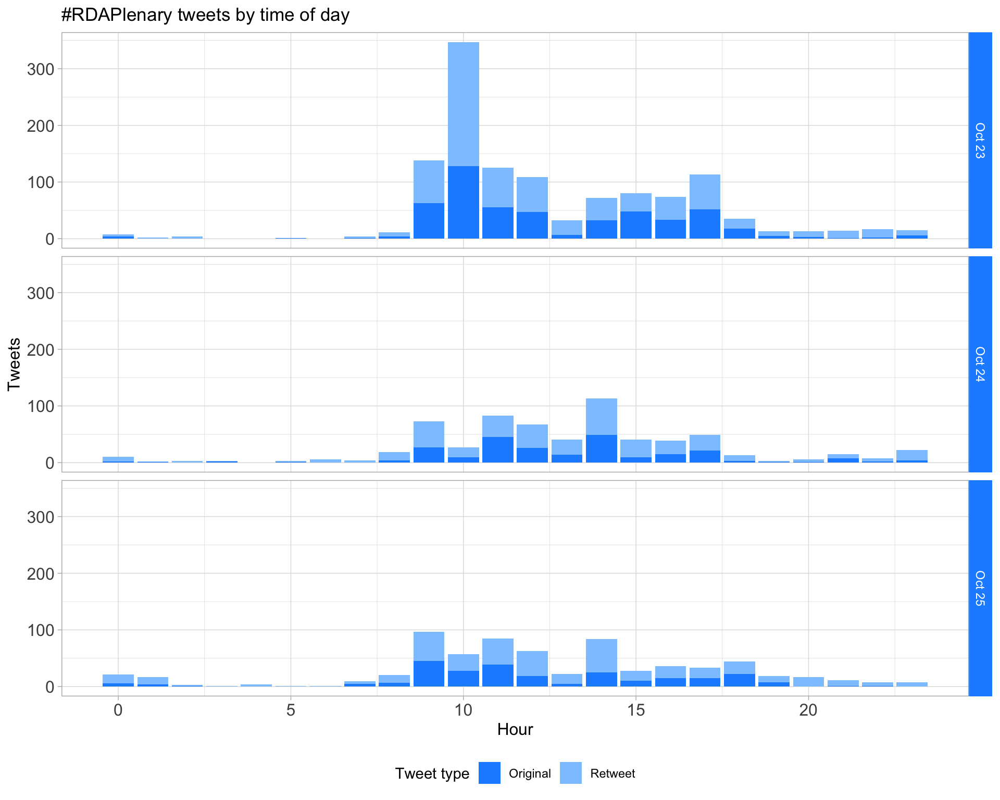
3 Users
3.1 Top tweeters
Overall
Original
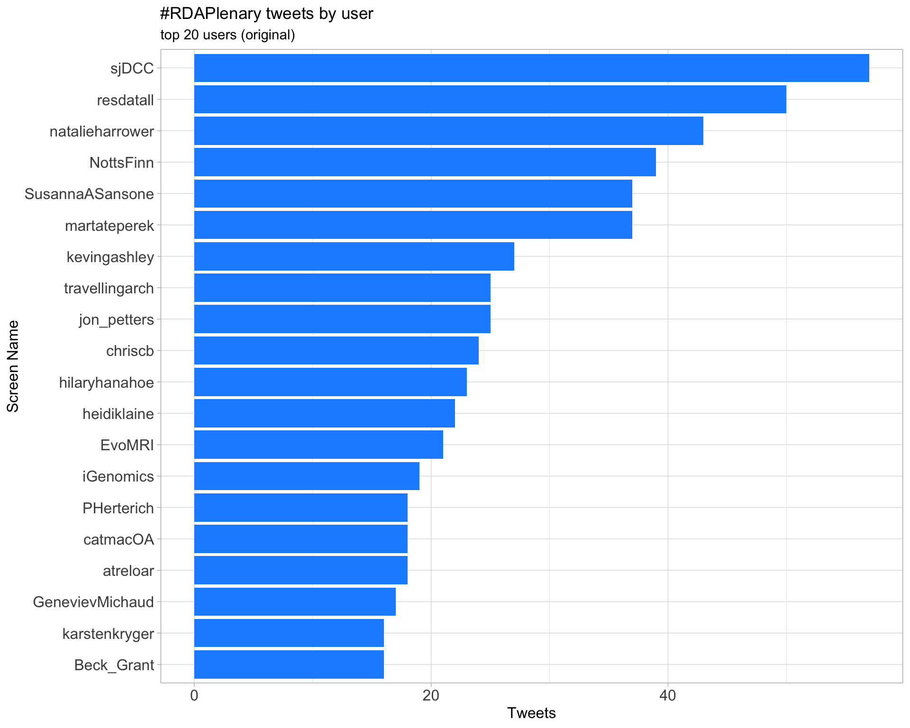
Retweets
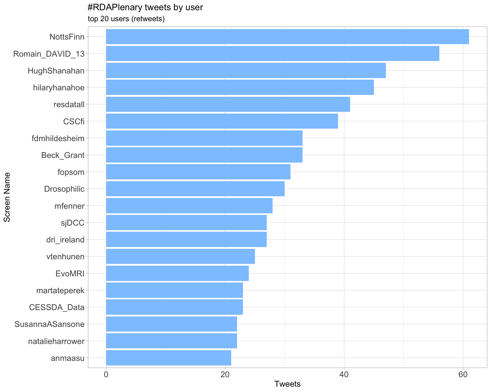
3.2 Retweet proportion
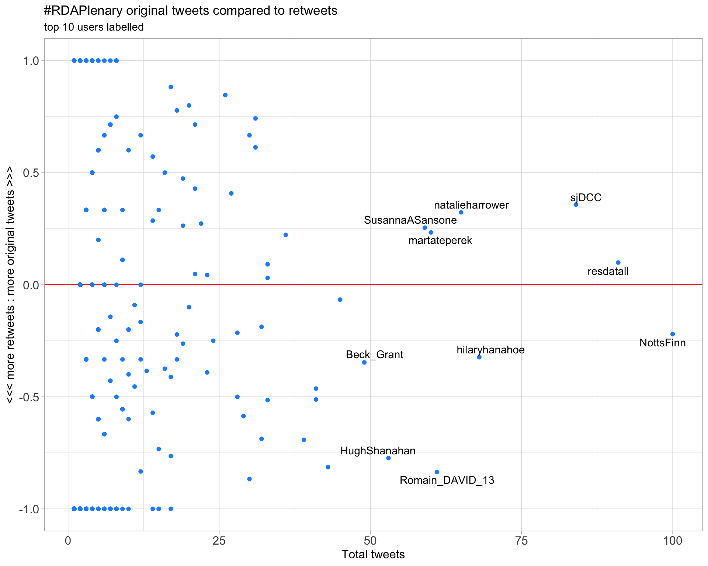
3.3 Top tweeters timeline
3.4 Top tweeters by day
Overall
Day 1
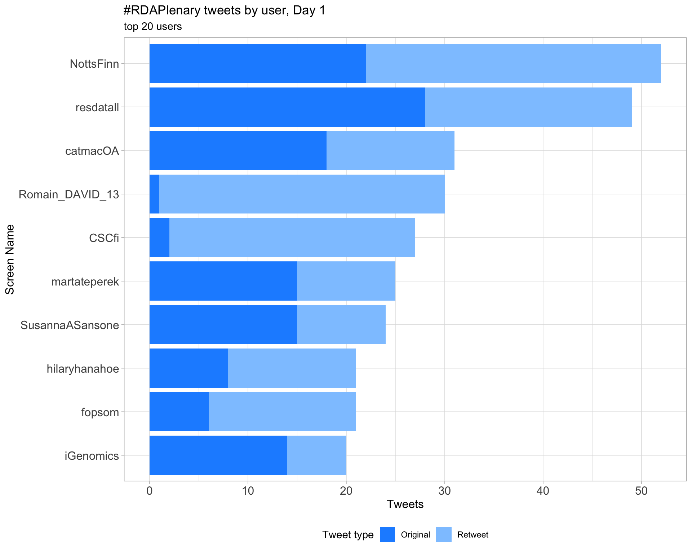
Day 2
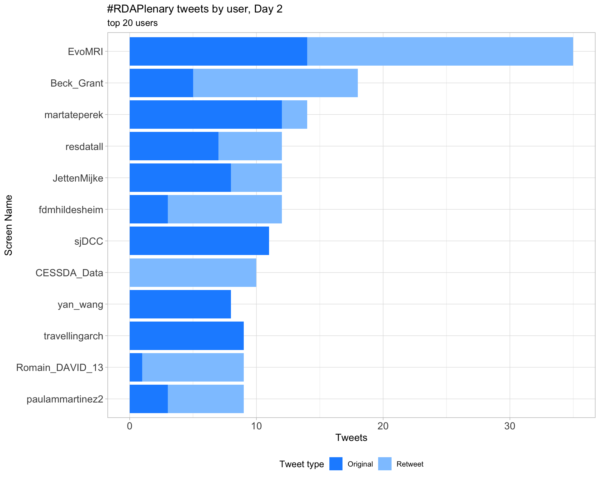
Day 3
Original
Day 1
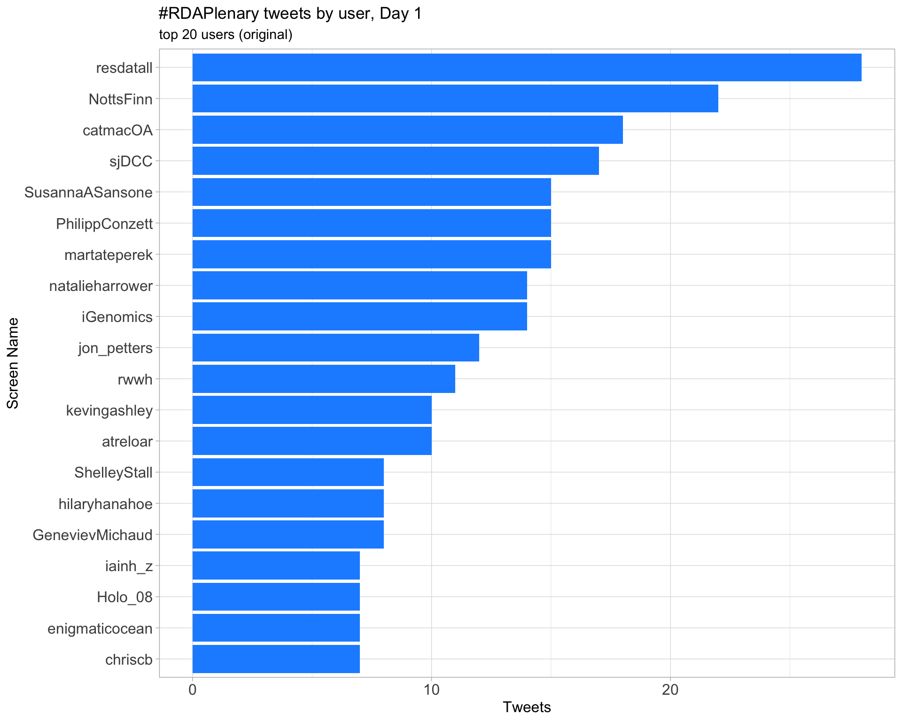
Day 2
Day 3
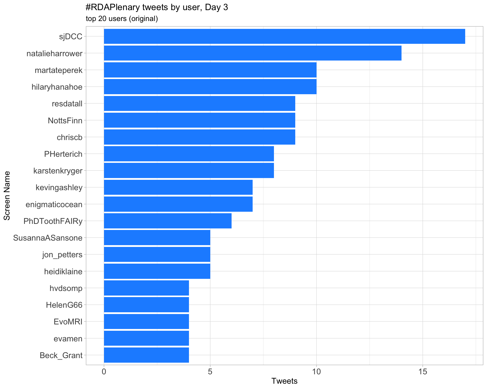
Retweets
Day 1
Day 2
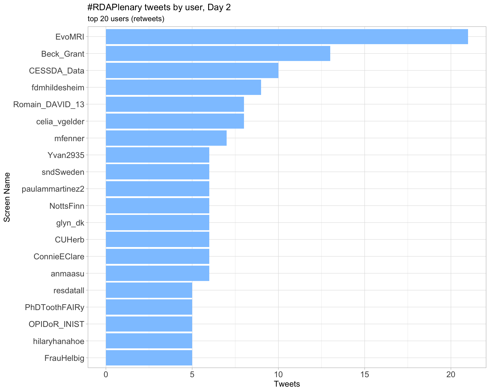
Day 3
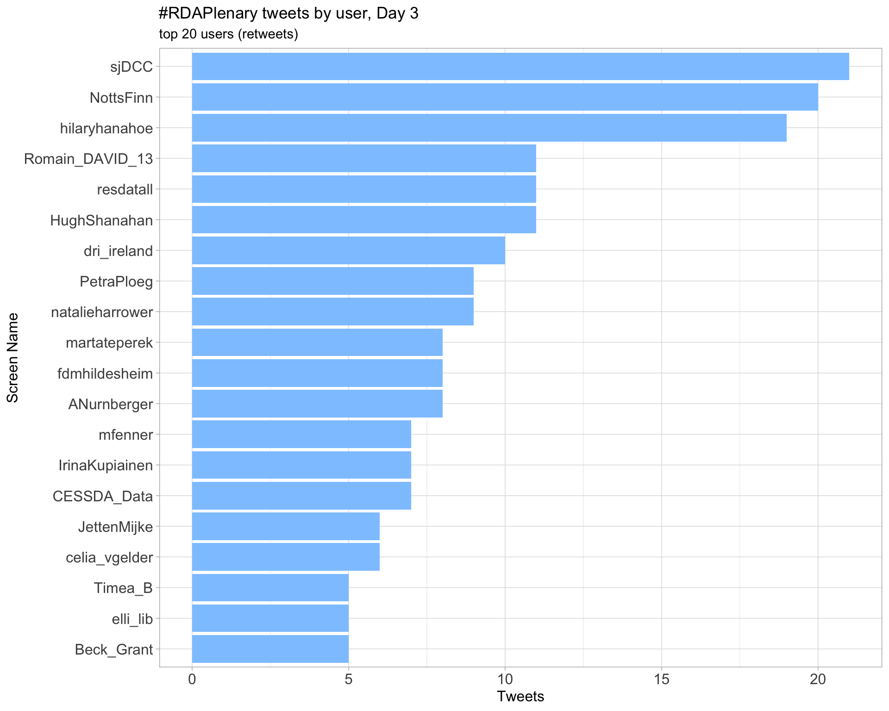
4 Sources
5 Networks
5.1 Replies
The “replies network”, composed from users who reply directly to one another, coloured by PageRank.
5.2 Mentions
The “mentions network”, where users mention other users in their tweets. Filtered for a k-core of 2. Node colour and size adjusted according to PageRank score.
6 Tweet types
6.1 Retweets
Proportion
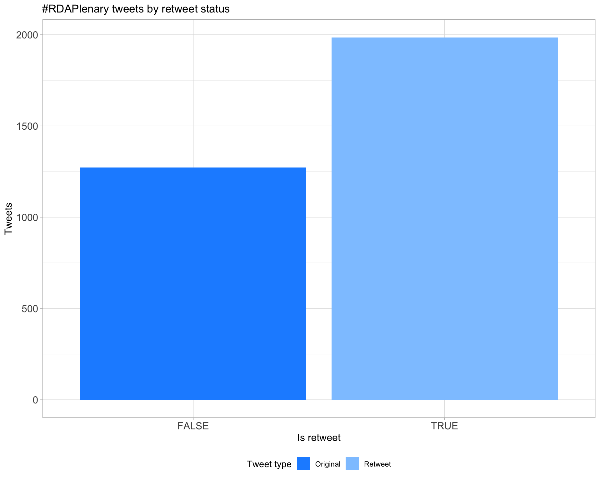
Count
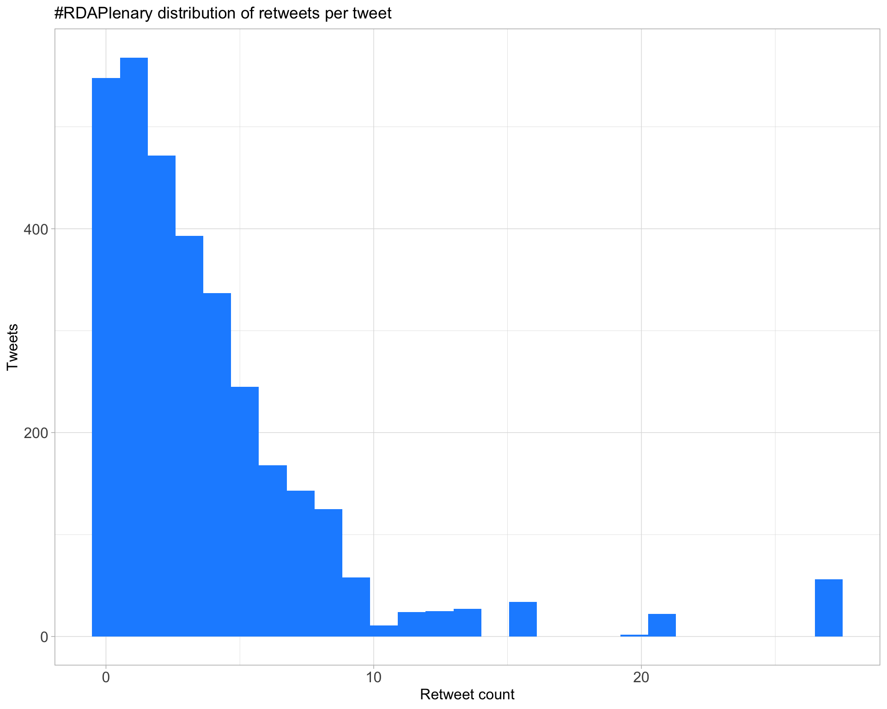
Top 10
| screen_name | text | retweet_count |
|---|---|---|
| martateperek | So so happy that @hilaryhanahoe mentioned our “Engaging Researchers with Data Management: The Cookbook” created as part of #L4RDIG in her opening plenary :) https://t.co/cF9kSoB60Y @OpenBookPublish #RDAPlenary @resdatall @RDA_Europe | 27 |
| resdatall | Who takes the responsibility for the maintenance and long term preservation of data? Is this the role of public sector? Today’s data can unlock knowledge for future generations A. Veispak European Commission #RDAPlenary @FutureTechEU https://t.co/sRGrg26KVf | 27 |
| Holo_08 | What is #EOSC in 2 slides ! Everything you need to understand #RDAPlenary https://t.co/EXOEhedXP3 | 21 |
| resdatall | Need an extra good reason to attend #RDAPlenary s? You never know what can happen ü§£ü§£ https://t.co/gLGDZbCt21 | 16 |
| iainh_z | Sobering finding about awareness of FAIR principles amongst researchers in the 2019 State of Open Data report, which had around 8,500 responses #RDAPlenary https://t.co/O25WBk4fQL https://t.co/BKLgoQKKL9 | 16 |
| mattcannontf | Fascinating presentation from Louise Beziudenhout this morning on surveying Open Research practices in Africa. #RDAPlenary Link to a 2018 paper https://t.co/t7QoqKiRUT | 13 |
| RDA_Europe | Here they are! Our #NationalNode coordinators and @resdatall Ambassadors gathered in #Helsinki! Come and talk to them during the #RDAPlenary: they have lots of national #datamanagement stories to tell! ➡️ Nodes https://t.co/BlM56mqDfR ➡️ Ambassadors https://t.co/ihGpu90KzB https://t.co/BZtN3ah3bI | 13 |
| iainh_z | State of Open Data 2019 report is out! https://t.co/rKbARaPNrE Has the largest number of respondents yet with key findings related to credit mechanisms (citations to papers is preferred mechanism) and barriers to sharing (fear of misuse is the top concern) #RDAPlenary https://t.co/laiCMlSvBT | 12 |
| FAIRsFAIR_EU | It’s tomorrow! 22 Oct The #FAIRsFAIR workshop on #FAIR #Semantics and FAIR #Repositories will take place in Espoo Finland, as a co-located event, during the #RDAPlenary P14 @RDA_Europe Let’s meet there to share recommendations, features & best practices! https://t.co/oaOtQA9UQr https://t.co/C0qX6qR7ag | 12 |
| martateperek | @CamOpenData And here is the book :) https://t.co/cF9kSoB60Y #RDAPlenary | 11 |
Most retweeted
6.2 Likes
Proportion
Count

Top 10
| screen_name | text | favorite_count |
|---|---|---|
| martateperek | So so happy that @hilaryhanahoe mentioned our “Engaging Researchers with Data Management: The Cookbook” created as part of #L4RDIG in her opening plenary :) https://t.co/cF9kSoB60Y @OpenBookPublish #RDAPlenary @resdatall @RDA_Europe | 65 |
| resdatall | Who takes the responsibility for the maintenance and long term preservation of data? Is this the role of public sector? Today’s data can unlock knowledge for future generations A. Veispak European Commission #RDAPlenary @FutureTechEU https://t.co/sRGrg26KVf | 50 |
| sorcha_ni | Dear Session Chairs, please look around your meeting room at ALL the people who want to ask questions, not just the men. Sincerely, me (who got passed over 5 times when my hand was raised & only got the mic because I made faces at the AV person) #RDAPlenary | 46 |
| resdatall | Need an extra good reason to attend #RDAPlenary s? You never know what can happen ü§£ü§£ https://t.co/gLGDZbCt21 | 42 |
| hilaryhanahoe | Helsinki #rdaplenary 14 In a nutshell … wide ranging musical tastes, fabulous @AaltoUniversity campus, surprising Finnish humour, energetic @resdatall community, interactive adoption & outputs session, chaotic productive unconference, wonderful hosts. Thank you all very much https://t.co/mP3bd5G0RD | 41 |
| PHerterich | OMG, I levelled up to a job that comes with business cards üò≤ Meet me at the #RDAPlenary next week to get one! @digitalcuration #ukdcc https://t.co/PNrMq64Of8 | 34 |
| hilaryhanahoe | Relaxing with the @resdatall secretariat and toasting to the success of the #rdaplenary. Hard workers with a passion for the community. Kiitos https://t.co/bWmuLRRb0w | 32 |
| heidiklaine | Have been waiting for this week since my first #RDAPlenary in 2013! So happy and proud to be soon welcoming my favourite #researchdata community to #Finland @AaltoUniversity @CSCfi et al. https://t.co/ElJORCSGPW | 31 |
| RDA_Europe | Here they are! Our #NationalNode coordinators and @resdatall Ambassadors gathered in #Helsinki! Come and talk to them during the #RDAPlenary: they have lots of national #datamanagement stories to tell! ➡️ Nodes https://t.co/BlM56mqDfR ➡️ Ambassadors https://t.co/ihGpu90KzB https://t.co/BZtN3ah3bI | 30 |
| TuuliToivonen |
Such a pleasure to participate the enthusiast #RDAPlenary today üòä As said in the keynote, it worries me how to keep science transparent in the age of big data. But gosh how we have advanced in data access! In 1999 a Landsat miniscene (1/16 part of img) costed over 1000 USD$! https://t.co/Y7EcWwPR3K |
29 |
Most likes
6.3 Quotes
Proportion

Count
Top 10
| screen_name | text | quote_count |
|---|---|---|
| SusannaASansone | Session starting! Join us if you are interested in hearing about standardisation #datapolicies #repositories #certification #data #metadata #standards with @CoreTrustSeal @FAIRsharing_org @ELIXIREurope & others. Pete @Drosophilic opens the session #RDAPlenary #RDAPlenary14 https://t.co/KLwMvwzuN8 https://t.co/T0YpSa3aBg | 4 |
| SusannaASansone | Dear #EOSC @FAIRsFAIR_EU @OpenAIRE_eu colleagues this is also relevant to you, please join us at breakout 3 (Undergraduate Centre) #RDAPlenary #RDAPlenary14 https://t.co/KLwMvwzuN8 | 4 |
| datacite | Don’t miss the discussion on Criteria for Repository Selection at #RDAPlenary - breakout 3 in room U4. If you want to prepare, the preprint is already available: https://t.co/hFbSZORNfP. https://t.co/UWRZmq5WFN | 4 |
| PhilippConzett | I’d like to attend, but I’m involved in another session, about @dataverseorg taking place at the same time @resdatall #RDAPlenary #RDAPlenary14 https://t.co/CKqGChbtbC | 4 |
| sjDCC | In this session just now and it’s being run fantastically by @rachaellammey of @CrossrefOrg Very glad she’s here and suggested the topic. #RDA14Unconference #RDAPlenary https://t.co/hFBNIuy0Mu | 3 |
| Timea_B | Suggest topics and vote for the best ones at the #RDA14Unconference desk. Have your say #RDAPlenary https://t.co/dGsT83Up5o https://t.co/XshyFztYOx | 3 |
| rachaellammey | Thanks @EvoMRI. I’d be really interested to chat about what might be possible here #RDAPlenary https://t.co/BziAHFQjKw | 3 |
| NottsFinn | The purpose of my job in a nutshell #digipres #RDAPlenary #rdaplenary14 https://t.co/Al0DZJ3Ev0 | 3 |
| PhilippConzett | @EOSC_eu and similar initiatives are great, but universities and other research organizations should not neglect their responsibility of long-term maintenance of #fairdata @resdatall #RDAPlenary #RDAPlenary14 https://t.co/gPfDxd3zcm | 3 |
| TilburgU_LIS_RS | The Research Data Office is also attending. Follow #RDAPlenary or @PetraPloeg to learn more about this 3-day Conference on research data. https://t.co/EiTZqlJ9Vu | 3 |
Most quoted
7 Media
Proportion
Top 10
| screen_name | text | favorite_count |
|---|---|---|
| resdatall | Who takes the responsibility for the maintenance and long term preservation of data? Is this the role of public sector? Today’s data can unlock knowledge for future generations A. Veispak European Commission #RDAPlenary @FutureTechEU https://t.co/sRGrg26KVf | 50 |
| resdatall | Need an extra good reason to attend #RDAPlenary s? You never know what can happen ü§£ü§£ https://t.co/gLGDZbCt21 | 42 |
| hilaryhanahoe | Helsinki #rdaplenary 14 In a nutshell … wide ranging musical tastes, fabulous @AaltoUniversity campus, surprising Finnish humour, energetic @resdatall community, interactive adoption & outputs session, chaotic productive unconference, wonderful hosts. Thank you all very much https://t.co/mP3bd5G0RD | 41 |
| PHerterich | OMG, I levelled up to a job that comes with business cards üò≤ Meet me at the #RDAPlenary next week to get one! @digitalcuration #ukdcc https://t.co/PNrMq64Of8 | 34 |
| hilaryhanahoe | Relaxing with the @resdatall secretariat and toasting to the success of the #rdaplenary. Hard workers with a passion for the community. Kiitos https://t.co/bWmuLRRb0w | 32 |
| heidiklaine | Have been waiting for this week since my first #RDAPlenary in 2013! So happy and proud to be soon welcoming my favourite #researchdata community to #Finland @AaltoUniversity @CSCfi et al. https://t.co/ElJORCSGPW | 31 |
| RDA_Europe | Here they are! Our #NationalNode coordinators and @resdatall Ambassadors gathered in #Helsinki! Come and talk to them during the #RDAPlenary: they have lots of national #datamanagement stories to tell! ➡️ Nodes https://t.co/BlM56mqDfR ➡️ Ambassadors https://t.co/ihGpu90KzB https://t.co/BZtN3ah3bI | 30 |
| ConnieEClare | Talking about ‚ÄòPromoting the work of the #DataChampions‚Äô üèÜat the #RDAPlenary (#30). Presenting highlights from my project at @tudelft and sharing unique researcher perspectives #OpenResearch and #DataSharing with the vibrant @RDA_Europe @RDA_Ireland @RDA_US @resdatall community https://t.co/V6r707bKzE | 25 |
| Holo_08 | What is #EOSC in 2 slides ! Everything you need to understand #RDAPlenary https://t.co/EXOEhedXP3 | 24 |
| ShelleyStall | Coming in for #RDAPlenary? - here is you candy primer as you go through the Helsinki Airport - All really good - Frazermint - minty (right!); Karl Fazer - proper chocolate; Dumie - caramel; Geisha - indescribably awesome with chocolate coating surrounding something luscious https://t.co/7UbwjdIyjX | 23 |
7.1 Most liked image

8 Tweet text
8.1 Word cloud
The top 100 words used 3 or more times.
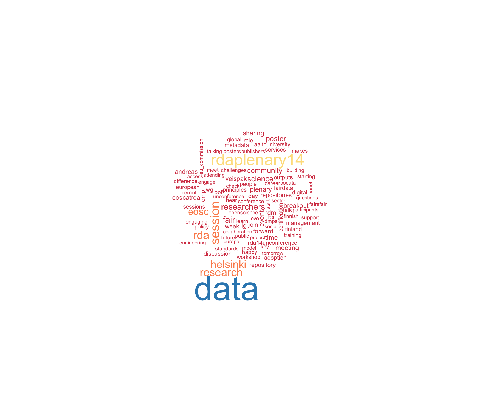
8.2 Bigram graph
Words that were tweeted next to each other at least 3 times.
8.3 Topic modelling
Top 10 words associated with 6 topics identified by LDA.
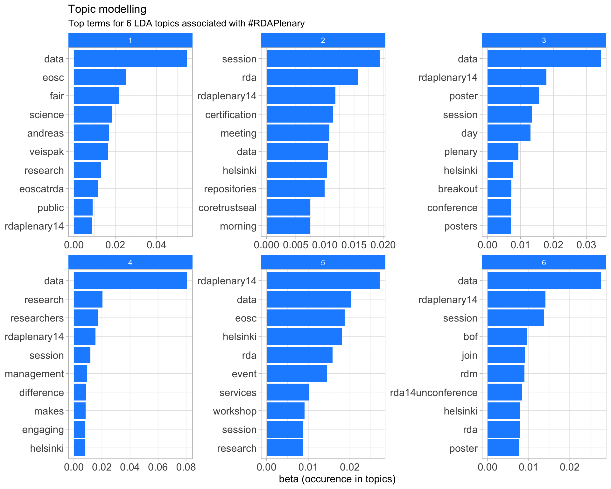
8.3.1 Representative tweets
Most representative tweets for each topic
Topic 1
| screen_name | text | gamma |
|---|---|---|
| iGenomics | Andreas Veispak: strength of European in Science, Innovation, and digital I: world’s largest producers of high quality scientific knowledge/ long-term pubic support for science, inherent interactional openness, connectivity ,& broadband, standardization, Rule of law. #RDAPlenary | 0.9923285 |
| iGenomics | AV: EOSC is to serve 1.7M European researchers and 70M professionals. It is an enabler of an open, transparent, rule-of-law-based, federated ecosystem. (“rule-of-law-based” seems a new term rarely mentioned in data science) #RDAPlenary | 0.9916680 |
| catmacOA | Who takes responsibility and who pays for open data and open infrastructure are key - and the public sector must take this role, including ensuring that any procurement process ensures that the data are open for reuse Andreas Veispak DG CNECT on his most impt slide #RDAPlenary https://t.co/a8ChmQ5U0L | 0.9916680 |
| eirgeu | Key #EOSC challenges according to A. Veispak: 1 Coordination complexity among stakeholders 2 Legal Structure 3 Maximising #EOSC benefits 4 Demand-side (user-driven) operalisation+ federated core, 5 Link EOSC with #EuroHPC +@GEANTnews 6. Long term commitment #EOSCatRDA #RDAPlenary | 0.9916680 |
| sjDCC | Andreas Veispak of DG CONNECT flags two key functions of the Research Data Alliance in the #EOSC - the international reach and the bottom-up user perspective. Completely agree. We need to take a global perspective and place user at centre #EOSCatRDA #RDAPlenary | 0.9916680 |
| FAIRsFAIR_EU | The use that future generations will do of research data - let‚Äôs think of spatial data - is unpredictable. The public sector has the responsibility to ensure access to #data Andreas Veispak DG CONNECT @EU_Growth @FutureTechEU #RDAPlenary #Helsinki üá´üáÆ #FAIR #CARE @resdatall https://t.co/F6pM3mZYMI | 0.9912933 |
| asmi_ari | Role of public sector in data revolution is not only financing research and operations. Intelligent demand, enablement, maintaining rules, and building framework are even more crucial roles. @EU_Commission CNECT A. Veispak at #RDAPlenary https://t.co/zrgGbkiJII | 0.9908832 |
| geekeconomist | Indeed, #EOSC politically came out within one of the Digital Single Market initiatives. For EOSC maybe the best solution is the one making no one happy? ü§î Or, citing Tyrion Lannister: ‚ÄúNo one‚Äôs very happy, which means it‚Äôs a good compromise, I suppose.‚Äù #EOSCatRDA #RDAPlenary14 https://t.co/Igglb6qPcU | 0.9908832 |
| ConnieEClare | As I prepare to leave #Helsinki I have 1 question on my mindüî•: How can we make the #RDAPlenary more accessible to researchers, particularly early career researchers who can‚Äôt afford to attend? Live streaming? Online participation? ideas?üí°@resdatall Let‚Äôs be FAIR/inclusive!üîì https://t.co/eGltQQPdTJ | 0.9908832 |
| rwwh | George Strawn in the panel: data wrangling takes 80% of research time. If we can make data interoperate (which is a many year endeavor!) and thereby reduce data preparation time to 20%, we quadruple the throughput of interdisciplinary science. #RDAPlenary https://t.co/jcBd8hdJqN | 0.9904326 |
Topic 2
| screen_name | text | gamma |
|---|---|---|
| RWTHUnibib | #BibOnTour Nachtrag - unsere Kollegin aus dem FDM-Team der Unibib hat uns noch ein Foto von der 14. RDA-Konferenz mit dem Poster zu #NFDI4ING aus Helsinki geschickt. Das teilen wir natürlich noch gerne. :-) https://t.co/SqKxg9mrTR #RWTHUnibib #FDMRWTH #RDAPlenary14 #RDAPlenary https://t.co/kLw5uzLVwT | 0.9948010 |
| RWTHUnibib | #BibOnTour Aktuell findet in Helsinki die 14. RDA-Konferenz statt. Mit dabei sind Kolleginnen aus dem FDM-Team der Unibib und des ITC (https://t.co/NHgJqOaxXo). Was die RDA alles zu bieten hat und das Programm findet man hier: https://t.co/SqKxg94R2j #FDMRWTH #RDAPlenary | 0.9945059 |
| iGenomics |
IG- RDA/WDS Certification of Digital Repositories: Adding a bit of GLAM to TRUSTworthiness: Certification Beyond Domain Repositories GLAM (Gallery, Library, Archive, Museum) Undergraduate Center-U142 U4 | Remote Access Available Oct. 25, FRI: 9am - 10:30 am#RDAplenary |
0.9928919 |
| VastTiede | Sen lisäksi, että ensi viikolla vietetään #RDAPlenary’a, on myös kansainvälinen avoimen julkaisemisen viikko. Laita siis myös aihetunniste #OAWeek19 seurantaan! #avointiede #avoindata #avoinjulkaiseminen #openaccess #openaccessweek https://t.co/F62fIcOb7N | 0.9916680 |
| GenevievMichaud | #RDAPlenary breakout 6 “RDA/WDS certification of digital repositories: adding a bit of GLAM to TRUSTworthiness” Dawei Lin @iGenomics: Repositories as a home for data and how the data ecosystem needs TRUSTworthy digital repositories part of a whole data ecosystem https://t.co/kglO2TAy0b | 0.9916680 |
| PetraPloeg | Besides FAIR principles for data, we need TRUST principles for data repositories. #TilburgU Dataverse is a TRUSTworthy repository with @CoreTrustSeal certification since 2018 https://t.co/BW0EAHcrpi Read the TRUST principles white paper https://t.co/5tnCmbFJz3 #RDAplenary https://t.co/pidUbxyPTe | 0.9908832 |
| rwwh | External participation reached maximum capacity in the maDMP session. Note for the organisation of next meeting to enable more liberal limits, since more people are trying to minimize their carbon footprint and try to avoid flying to plenaries. #RDAPlenary | 0.9904326 |
| sjDCC | The embarrassing moment when you’re introduced to someone’s colleague on the dancefloor and ask if they live in Barcelona too, only to realise they’re all Norwegian… @livek of the top-rated DMP paper at #idcc20 is not Mary Hirsch of @datacite #RDAPlenary #brainfail #sosorry https://t.co/cZfibpT8My | 0.9904326 |
| GenevievMichaud | @iGenomics #RDAPlenary breakout 6 “Trustworthy Digital Repositories plus .. GLAM)” by @hervelh @CoreTrustSeal board Takeway 1: Know your designated community (indeed a trigger for change) Takeway 2: “will you keep data forever?” better be responsive to changes into prevailing technology https://t.co/CxaQNNEm3h | 0.9904326 |
| ShelleyStall | ESIP Executive Director @ESIP_Erin facilitating the ESES IG today sharing the value of @ESIPfed for the Earth, space, and environmental informatics community with engagement in the US and Australia. Plan to come to E2SIP in Melbourne co-located with #RDAPlenary 15! https://t.co/aTUSZRJNjZ | 0.9899351 |
Topic 3
| screen_name | text | gamma |
|---|---|---|
| LiljaErika | Tutkimusyhteisössä hoksottimet ojossa: ei rakenneta datasta, tai muista tuotoksista ja toiminnasta, meritoitumisen järjestelmää=arviointia vinoon. #RDAPlenary ”Tutkimusdatan ei pidä antaa luisua kaupalliseen hallintaan kuten tiedejulkaisujen kohdalla on tapahtunut.” #avointiede https://t.co/Fa2Gb1GZ9R | 0.9928919 |
| FZampati | A lot of things are happening at the #IGAD side event of the #RDAPlenary14 meeting in Helsinki! Presentation of the GODAN action project. #GODAN action# free GODAN tools for open data publishers,data users and data enablers#available at the GODAN website#open data @godanSec https://t.co/HS5RFXxUtB | 0.9926209 |
| fkarayan | #Data is the new water and not oil according to Pilvi Torsti, #Finnish ministry of economic affairs. #Google autocomplete comes up with 1. oil 2. bacon 3. gold. 4. currency. Water is nice with positive-negative sides, while oil is old-fashioned, retiring energy means #RDAPlenary https://t.co/mCpcKqis05 | 0.9923285 |
| catmacOA | No surprise that higher impact factor journals have more stringent data policies - the reward culture means that researchers are way more willing to jump hoops to get in -creates further inequity among journals - & cements capital of established prestige journals #RDAPlenary https://t.co/kPkKRIrEtB | 0.9912933 |
| sjDCC |
Going the scenic route to #RDAplenary via Tallinn and a quick visit to the excellent Estonian Museum of Applied Art and Design #ETDM https://t.co/7PdsQfPqC6 Love how they’ve used the space. Great labelling and upper platforms to view wall hangings https://t.co/TVlURQdDRP |
0.9912933 |
| resdatall | Thanks to collaboration withxx @ExLibrisEurope, we are able to provide #RDAPlenary attendees an online conference app to help them easily access the Plenary programme and sessions. Enjoy it! ➡️ Google Play: https://t.co/JXTsaoAhlZ ➡️ App Store: https://t.co/dc7poSbSnt https://t.co/lsJzQA9Yxl | 0.9908832 |
| hilaryhanahoe | That’s a wrap … the @resdatall kangaroo gifted to the #rdaplenary programme committee for P14 by the P15 organisers. Such a wonderful group of colleagues who organised a fantastic event. Yolanda Meleco missing from picture. We hand over to @ARDC_AU @CSIRO for Melbourne now https://t.co/nJeG6cR5Rf | 0.9908832 |
| RDA_Europe | Meet @ressalbo from @tuvienna, @RDA_Europe ECR #RDAPlenary14 grant winner. Simon has a background in Software Engineering and Internet Computing. Engage with him at the Plenary poster session @resdatall where he presents the details of his work: https://t.co/5uvesdnOjl https://t.co/3HuTD15kvq | 0.9904326 |
| KristinaHettne | Barbara Magagna presenting ENVRI-FAIR results at the #FAIR Matrix #RDAPlenary co-located event. Enjoyed chairing this event organised by GEDE, @GOFAIRofficial, ENVRI-FAIR and @CDSLeiden @ubleiden, in collaboration with @FAIRsFAIR_EU. https://t.co/krW3fbf5ox | 0.9904326 |
| catmacOA | Data Policy @PLOS is less stringent at type 4 - required Data availabilty statement in 2014 but now has 26% of papers with data available - though impact of DAS alone on data being made available varies - eg BMC compared with PLOS (Fig) @iainh_z #RDAPlenary https://t.co/cDLYWxi6kF | 0.9904326 |
Topic 4
| screen_name | text | gamma |
|---|---|---|
| AvoinTiede |
|
0.9928919 |
| yasmurayama | Visit a poster at #RDAPlenary14, of RDUF (Research Data Utilization Forum) or a Japan’s community-driven research data “alliance”. Ask a question to co-authors, me @yasmurayama, Takeda-san @takechan2000, or RDUF secretariat (JST @JST_info). https://t.co/7rGymcVqBh | 0.9920119 |
| simonhodson99 | Opening talk from Tomi Ahoranta from the National Archives of Finland on a series of projects to digitise resources, including OCR and a major initiative called Time Machine to make European GLAM resources available https://t.co/airE9tIQsL #CODATARDMHelsinki #RDAplenary | 0.9912933 |
| chriscb | Drilling down into some of the case studies (such as the network of data champions at TU Delft, Cambridge, Wageningen), in the Engaging Researchers with Data Management cookbook https://t.co/yXJ3OJBM0x You can read the whole book or cherry pick relevant case studies. #RDAPlenary | 0.9908832 |
| LiljaErika | @resdatall Data as a game changer panel discussion. @evamen reminds us that game changer is technology, not data itself, and George Strawn that there is more cultural than technological resistance to #OpenScience. 2nd day of #RDAPlenary - full of valuable takeaways! https://t.co/ZkdC178Nhn | 0.9908832 |
| natalieharrower | The Global Open Research Commons IG at @resdatall has created a geographically diverse group to write the charter, and has decided that the IG will spawn WGs - RDA’s groups tree is getting larger and more complex - such incredible energy in this Alliance #OpenScience #RDAPlenary | 0.9908832 |
| FAIRsFAIR_EU | Studying insects in the Amazonian region, understanding social media engagement, discovering linguistic trends for geotagged sites: are we moving towards more open research culture? @TuuliToivonen @helsinkiuni #RDAPlenary @resdatall #Helsinki üá´üáÆ https://t.co/r5ntaw2GkH https://t.co/OLE7Dd9Akt | 0.9904326 |
| FlorianDRX | [ ü§ñ new agenda https://t.co/i50o8g2zPd item] ‚Üí [open science] RDA 14th Plenary‚ÄîData Makes the Difference at Helsinki, Finland from October 23, 2019 at 12:00AM to October 26, 2019 at 12:00AM More info: @resdatall #P14 #RDAFinland2019 #RDAPlenary https://t.co/EsBjLFKMob | 0.9904326 |
| CamOpenData | We wish we were at the Engaging Researchers With Research Data: What Works? Birds of a Feather session starting now at the RDA Plenary in Helsinki. They are discussing the new RDM Cookbook which features our Data Champions #datachampcam and alumni DC @martateperek #RDAPlenary | 0.9904326 |
| fopsom | Prof. Heikki Mannila, President of Academy of Finland, talks about Big Data, Small Data and Open data as the opening plenary talk at the @resdatall #RDAPlenary. A key point; education and #Training of ECRs on data (management/openness/…). @rdaeceig https://t.co/MQ9cBq3BWB | 0.9904326 |
Topic 5
| screen_name | text | gamma |
|---|---|---|
| evamen | @lluisanglada Jaja..!!! Muchas gracias. De hecho, yo tendría que haber estado en ese congreso porque me invitaron los amigos de la #UNAM y me habría encantado ir, pero estoy a full #RDAplenary14… Imposible… al menos, me alegro que mi seta esté ahí!!! Un abrazo a todos!!! Julieta, Julio… | 0.9949370 |
| evamen | @GPSalmeron @gimenadelr @uc3m jajajajaj… gracias Gloria!!! y a ti por citarme, recordarme. De verdad que me habría encantado estar en esa conferencia con los amigos de la #UNAM pero esta semana #EUOSPP #RDAPlenary and on and on… | 0.9931436 |
| jrwyngaard | 16:30 EEST today. #RDAPlenary P14 Drone data session. Come hear Hackathon report and give your input on upcoming output goals. #DroneData product levels/sensor use procedures/metadata/education/workflows/….<Your drone data research need here > Remote: https://t.co/JnkS9VUQI2 | 0.9928919 |
| AvoinTiede | Pääjohtaja Heikki Mannila @SuomenAkatemia avasi #RDAplenary’n toteamalla, että korkeakoulujen tutkintovaatimukset ja resurssit ovat avainasemassa, kun halutaan lisätä data-analyysin perusteiden osaamista ja ymmärrystä #avoindata’sta. #avointiede https://t.co/aFu1ZzLjD7 | 0.9920119 |
| LiljaErika | Heikki Mannila, President of the @SuomenAkatemia opening @resdatall #RDAPlenary Universities have the key role in designing curricula, career paths, researcher evaluation, allocating resources and providing services related to data, incl. #datamanagement and #opendata. #openutu https://t.co/Zpyv17rYrY | 0.9916680 |
| FAIRsharing_org |
Remote access for our sessions tomorrow: 9am - The challenging FAIRisation route- U6 - https://t.co/k63IvB3ofd 11am - Metadata for FAIR Data - U6 - https://t.co/k63IvB3ofd 4pm - Reuse and adoption of standards in agrifood - U119 - https://t.co/SkbcgvvNcZ #RDAPlenary |
0.9916680 |
| FAIRsharing_org |
We know what you‚Äôre thinking‚Ķ Where will FAIRsharing be tomorrow? Don‚Äôt worry, we‚Äôve got you covered üòâ: 9am - The challenging FAIRisation route- U6 11am - Metadata for FAIR Data - U6 4pm - Reuse and adoption of standards in agrifood - U119 #RDAPlenary #RDAPlenary14 |
0.9912933 |
| RDA_Europe | Meet Dimitra Mavraki, @RDA_Europe Researcher and Data Expert #RDAPlenary14 grant winner. She is an Environmental Scientist & Data Manager, focused on marine and historical data at @hcmr_gr. Find Dimitra at the #RDAPlenary #PosterSession: https://t.co/lSUuStDYNT https://t.co/9xEsTft3cH | 0.9912933 |
| ShelleyStall | Coming in for #RDAPlenary? - here is you candy primer as you go through the Helsinki Airport - All really good - Frazermint - minty (right!); Karl Fazer - proper chocolate; Dumie - caramel; Geisha - indescribably awesome with chocolate coating surrounding something luscious https://t.co/7UbwjdIyjX | 0.9908832 |
| SusannaASansone | #EOSCatRDA now EOSC WGs (yes, a layered cake of groups that should intertwine with a number of generic and discipline-specific EOSC-funded projects, alliances etc.). First is the #EOSCFAIRWG whose mission is not to reinvent the wheels but reuse what exists #RDAplenary #FAIRdata https://t.co/4vRvxdk7aV | 0.9908832 |
Topic 6
| screen_name | text | gamma |
|---|---|---|
| hilaryhanahoe | Helsinki #rdaplenary 14 In a nutshell … wide ranging musical tastes, fabulous @AaltoUniversity campus, surprising Finnish humour, energetic @resdatall community, interactive adoption & outputs session, chaotic productive unconference, wonderful hosts. Thank you all very much https://t.co/mP3bd5G0RD | 0.9920119 |
| JettenMijke | Tweet 1. Conveying the message of ‘sharing data’ to researchers intrinsically implies addressing ethical and legal issues. These are complicated (‘grey area’) and depend on the context (GDPR-country, pushing legal barriers to be ‘open’ etc.) #RDA14Unconference #RDAPlenary | 0.9912933 |
| AnttiPursula | Synthetic or simulated data discussed as a solution for many security / privacy concerns in #health research. For example simulated genomes that resemble real patient information to create a virtual patient cohort, at #RDAPlenary #ELIXIR interest group meeting. @ELIXIRFinland | 0.9912933 |
| heidiklaine | Institutional research data service priorities (and/or competencies?) presented by Andrew Cox : building web sites, giving copyright advice üëç, supporting hands-on data work (analysis, mining, visualising) üëé #CODATA #RDAplenary https://t.co/aJYAw8npdE | 0.9912933 |
| catmacOA | The journal @ScientificData (Nature journal) has a ‘Type 6’ policy (the ideal & most strngent)- enforces data sharing & data citation - jrnl staff enforce & check all 14 aspects of policy - really rigorous but large burden on author & publisher #RDAPlenary | 0.9912933 |
| makedatacount | Interested in joining our RDA Data Usage Metrics WG session on Oct 23 to discuss shortcomings of usage metrics & community requirements for moving forward but aren’t attending #RDAPlenary14 #RDAPlenary? Remote participation is available, instructions at: https://t.co/zhi28IwXXt | 0.9912933 |
| sndSweden | Two happy #RDAplenary participants visiting #RDASweden during the poster sessions: Carl-Fredrik Enell from @EISCATofficial in Kiruna and Anne Bergsaker from @UniOslo. Thank you for coming üòÉ, RDA Sweden and @sndSweden are looking forward to future cooperation in the @resdatall! https://t.co/hD0EgSEOAn | 0.9908832 |
| travellingarch | @fopsom giving the introduction to the Early Career and Engagement IG @rdaeceig. Love that he mentioned that EC is not about age, but where you are at in your career (e.g., beginning, transition, etc.). This mindset helps to create a welcoming and inclusive community #RDAPlenary https://t.co/QAur9iESpx | 0.9904326 |
| atreloar | Chinese researcher at #rdaplenary explaining that researchers can have lots of IDs - Passport ID, National ID, WeChat ID, ORCID. I realise that my country has the equivalents of these, but I still feel slightly chilled… | 0.9899351 |
| EvoMRI |
My favourite suggestion for the #RDA14Unconference so far: “Linking funding to research activities, outputs, and outcomes (developing a robust, open, reliable registry of grant IDs and metadata)” You can submit your own via https://t.co/RwL3s5ZOkj . #RDAPlenary #RDAPlenary14 |
0.9899351 |
9 Software
Software mentioned in Tweets with links to GitHub, BitBucket, Bioconductor or CRAN.
| Name | Type | Link |
|---|---|---|
| dmap | GitHub | https://github.com/oblassers/dmap |
| EDSF | GitHub | https://github.com/edisoncommunity/edsf/wiki/edsfhome |
| events | GitHub | https://github.com/daniel-mietchen/events/blob/master/ecsa-2018-usability.md |
| opendata | GitHub | https://github.com/swimdrinkfish/opendata |
| roadmap | GitHub | https://github.com/dmproadmap/roadmap/wiki |
Session info
## R version 3.6.0 (2019-04-26)
## Platform: x86_64-apple-darwin15.6.0 (64-bit)
## Running under: macOS Mojave 10.14.6
##
## Matrix products: default
## BLAS: /Library/Frameworks/R.framework/Versions/3.6/Resources/lib/libRblas.0.dylib
## LAPACK: /Library/Frameworks/R.framework/Versions/3.6/Resources/lib/libRlapack.dylib
##
## locale:
## [1] en_AU.UTF-8/en_AU.UTF-8/en_AU.UTF-8/C/en_AU.UTF-8/en_AU.UTF-8
##
## attached base packages:
## [1] stats graphics grDevices utils datasets methods base
##
## other attached packages:
## [1] fs_1.3.1 here_0.1 knitr_1.25
## [4] magick_2.2 webshot_0.5.1 viridis_0.5.1
## [7] viridisLite_0.3.0 wordcloud_2.6 RColorBrewer_1.1-2
## [10] ggraph_2.0.0 ggrepel_0.8.1 ggplot2_3.2.1
## [13] topicmodels_0.2-8 tidytext_0.2.2 igraph_1.2.4.1
## [16] stringr_1.4.0 purrr_0.3.3 forcats_0.4.0
## [19] lubridate_1.7.4 tidyr_1.0.0 dplyr_0.8.3
## [22] rtweet_0.6.9
##
## loaded via a namespace (and not attached):
## [1] httr_1.4.1 tidygraph_1.1.2 jsonlite_1.6
## [4] assertthat_0.2.1 askpass_1.1 highr_0.8
## [7] stats4_3.6.0 yaml_2.2.0 progress_1.2.2
## [10] slam_0.1-45 pillar_1.4.2 backports_1.1.5
## [13] lattice_0.20-38 glue_1.3.1 digest_0.6.22
## [16] polyclip_1.10-0 colorspace_1.4-1 plyr_1.8.4
## [19] htmltools_0.4.0 Matrix_1.2-17 tm_0.7-6
## [22] pkgconfig_2.0.3 scales_1.0.0 processx_3.4.1
## [25] tweenr_1.0.1 ggforce_0.3.1 tibble_2.1.3
## [28] openssl_1.4.1 generics_0.0.2 farver_1.1.0
## [31] ellipsis_0.3.0 withr_2.1.2 lazyeval_0.2.2
## [34] cli_1.1.0 NLP_0.2-0 magrittr_1.5
## [37] crayon_1.3.4 ps_1.3.0 evaluate_0.14
## [40] tokenizers_0.2.1 janeaustenr_0.1.5 fansi_0.4.0
## [43] SnowballC_0.6.0 MASS_7.3-51.4 xml2_1.2.2
## [46] tools_3.6.0 prettyunits_1.0.2 hms_0.5.1
## [49] lifecycle_0.1.0 munsell_0.5.0 callr_3.3.2
## [52] compiler_3.6.0 rlang_0.4.0 grid_3.6.0
## [55] labeling_0.3 rmarkdown_1.16 gtable_0.3.0
## [58] curl_4.2 reshape2_1.4.3 graphlayouts_0.5.0
## [61] R6_2.4.0 gridExtra_2.3 utf8_1.1.4
## [64] zeallot_0.1.0 rprojroot_1.3-2 modeltools_0.2-22
## [67] stringi_1.4.3 parallel_3.6.0 Rcpp_1.0.2
## [70] vctrs_0.2.0 tidyselect_0.2.5 xfun_0.10